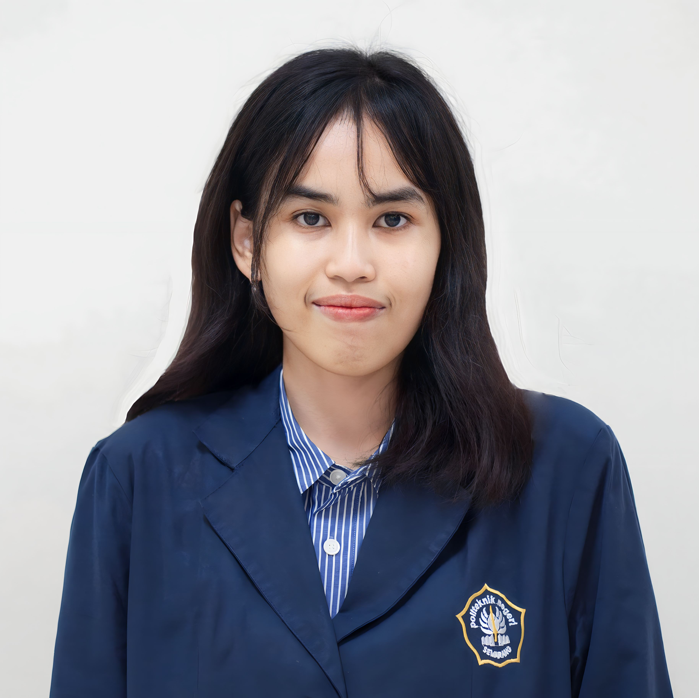

About Me
An Informatics Engineering student with a creative flair and a deep passion for the arts and creative industry. Proficient in 2D artworks, photo/video editing, animation, UI/UX, and game development. Have some experiences in managing social media. Eager learner, adaptive, and dedicated to excelling in all endeavors.
Work and Organizational Experience
Staff of Media and Creative Department (Core Team)
Google Developer Student Club Politeknik Negeri Semarang
Sep 2023 - now
Google Developer Student Clubs are university based community groups for students interested in Google developer technologies, passionate about learning, connecting, and solving local problems with technology
- Provide a variety of activities and resources to help GDSC members develop their skills and knowledge
- Create designs and other visual that represent the community such as event poster or any social media purpose for @gdsc.polines
Graphic Designer (Intern)
PT Citi Asia Internasional
Aug 2023 - Dec 2023
Certified Internship Batch 5 by Kampus Merdeka
- Create designs for company social media (such as for Instagram @citiasiainc and LinkedIn Citiasia, Inc) and various company publication needs
- Involved in content planning and development along with the social media team
- Involved in organizing, directing, and implementing projects according to the planned time and quality
Tools used:
- Figma
- Adobe Photoshop
- CorelDRAW
- Trello Project Management
Staff of Bidang Pengabdian Masyarakat (Public Service and Relation Department)
Himpunan Mahasiswa Elektro Politeknik Negeri Semarang
May 2022 - May 2023
Himpunan Mahasiswa Elektro (Electro Student Association) is a student organization at the Electrical Engineering Department level of Politeknik Negeri Semarang that aims to serve and facilitate the Electro community
- Manage HME's social media account such as Instagram @hmepolines
- Manage internal and external social activities carried out by HME or other Electro societies
- Manage internal and external public relations
- Create digital and print products for organizational purpose
Staff of Multimedia Department
Polytechnic Computer Club (PCC)
May 2022 - May 2023
Polytechnic Computer Club (PCC) is a student activity unit (UKM) at Politeknik Negeri Semarang which is active in the field of technology, with the purpose of accommodating, improving, developing knowledge and skills in the IT field
- Became a training speaker about multimedia such as graphic design, video editing, and also UI/UX design in several events attended by dozens of Politeknik Negeri Semarang students
- Help develop hard skills on multimedia for PCC members, the academic community, and the general public
- Create products and portfolios related to multimedia for organizational purpose and to be posted on Instagram @mulmedpcc
Skills & Tools
Design & Editing
-
Adobe Photoshop
-
Adobe Premiere Pro
-
Adobe XD
-
CorelDRAW
-
Figma
-
Trello Project Management
-
Sony Vegas
-
Unity 2D
Education
-
Associate Degree in Informatics EngineeringPoliteknik Negeri SemarangSep 2021 - Sep 2024 (Expected)
Awards
-
1st PlaceVideo Competition LV PENTAS 20 by SMA Karangturi (December 2020)
-
1st PlacePoster Competition 'The Impact of Gadget Addiction' by CAS Unika Soegijapranata (March 2021)
-
FinalistGame Development Competition of Kompetisi Mahasiswa Informatika Politeknik Nasional (KMIPN) V held on Politeknik Elektronika Negeri Surabaya (August 2023)
Language
- Bahasa Indonesia (Native)
- English (Professional)
Interests
- Editing
- Illustrating
- Crafting Art